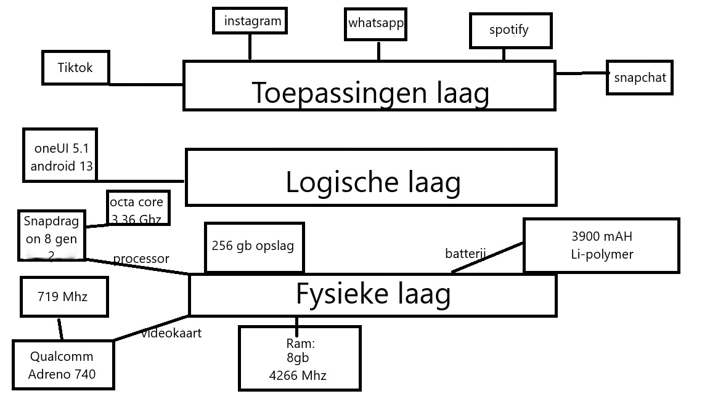
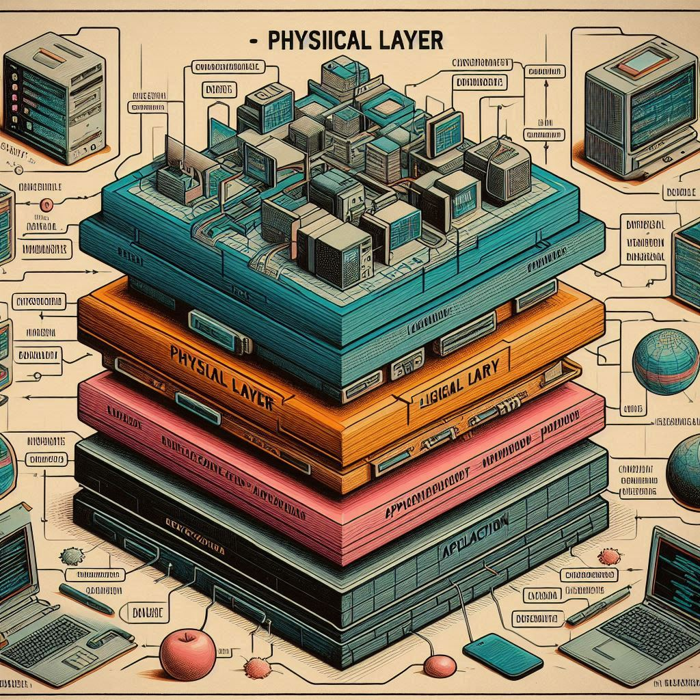

Dit is de onderste laag waar alle data fysiek wordt opgeslagen, zoals in databases of bestanden. Hier wordt informatie bijgehouden en beheerd. In een website of computersysteem is dit de plek waar bijvoorbeeld klantgegevens, productinformatie of bestellingen bewaard worden. Deze laag communiceert met de logische laag om data op te vragen of op te slaan wanneer dat nodig is.
Dit is de laag waarin je besturingssyteem staat. Bij de meeste mensen tegenwoordig wordt vooral android van bijvoorbeeld samsung of IOS van apple gebruikt op de telefoon en voor computers vooral windowsmacOS of Linux. Heel simpel gezegt staat het besturingsysteem tussen jij en de ijzer kast van je computer in omdat zonder besturingsysteem er geen programmas worden aangestuurt om wat te doen of om uberhoudt al aan te gaan en het schiet niet op om handmatig zelf alle programmas aan te gaan lopen sturen.
Dit is de laag waarmee je als gebruiker daadwerkelijk te maken mee krijgt. Dit zijn namelijk de apps zoals tiktok,instagram,facebook,whatsapp en nog veel meer.
 